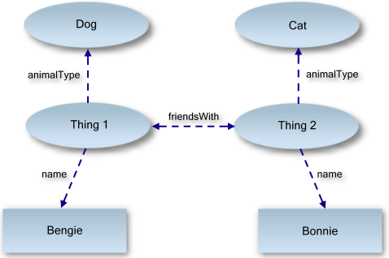

Sami J. Lehtinen <sjl@iki.fi> 44814P
Kaarle Rajamaa <krajamaa@cc.hut.fi> 69283L
Linking Open Datan (LOD) ideana on luoda eräänlainen maailmanlaajuinen tietokanta, jossa kaikki maailman tieto kytkeytyy toisiinsa yhteismitallisessa muodossa Semanttisen webin tekniikoita hyödyntäen.
Perehdy kolmeen olemassa olevaan LOD-selaimeen, vertaile niiden ominaisuuksia sekä tuota jokaisella niistä jokin mielestäsi mielenkiintoinen visualisointi/tuloste valitsemastasi LOD-aineistosta. Perustele lyhyesti kunkin visualisoinnin/tulosteen osalta mikä tekee siitä mielenkiintoisen ja mitä tietoja jäit kaipaamaan.
Osoitteita, joista kannattaa aloittaa:
Assistentti: Markku Laine, markku.laine at tml.hut.fi
Tämän harjoitustyön aiheena on Linking Open Data, W3C-projekti, joka lähti Tim Berners-Leen aloitteesta muodostaa avointa dataa semanttisen webin tarpeisiin (katso myös Linked Data). Linking Open Datan ideana on esittää tietoa web-artikkeleissa tavalla, joka sallii tiedon linkittämisen helposti muuhun aiheeseen kuuluvaan tietoon. Projektissa on kerätty suuria arkistoja käsitteitä ja dataa. Arkistot koostuvat enimmäkseen RDF-dataseteistä.
Nykyisin suuri osa verkossa olevasta tiedosta esitetään HTML-sivustoina, jotka on linkitetty toisiinsa hyperlinkeillä. Tietokoneet pystyvät lukemaan sivuja, mutta avainsanojen käsittelemistä lukuun ottamatta koneet eivät ymmärrä sivustojen sisältöä.
Semanttinen web pyrkii muuttamaan tapaa näyttää ja jakaa tieto verkossa niin, että verkon tietoresurssit saataisiin käyttöön kokonaisuutena.
Ideana on, että data on verkossa muodossa, josta tietokoneet pystyvät hakemaan linkkejä muuhun siihen liittyvään tietoon automaattisesti esimerkiksi tiettyjen hakuehtojen mukaisesti.
Linked Datassa voidaan verkon avulla liittää aikaisemmin toisiinsa linkittämätöntä dataa yhteen tai liitetään toisiinsa linkitettyä dataa yhteen uusin perustein.
Nykyisellään tietoa tallennetaan esimerkiksi XML:n tapaan hierarkkisiin dokumentteihin tai relationaalisiin tietokantoihin, kuten MySQL. RDF on yksi semanttisen verkon kulmakivistä määrittäen graafisen tietokannan, jonka ympärille semanttinen verkko rakentuu maailmanlaajuisesti.[Int]
Perinteisten tietomuotojen rakenteessa eri elementit ovat eri asemassa toisiinsa nähden - toiset elementit ovat tärkeämpiä ja etusijalla toisiin nähden. Esimerkiksi XML-dokumentissa kaikki elementit sijoittuvat toisten elementtien sisälle, paitsi korkeimman tason elementti.[Int]
RDF (Resource Description Framework) on standardoitu malli tiedon vaihtamiseen verkossa. RDF:n ominaisuuksiin kuuluu että se pystyy käsittelemään monen eri tietomallin sisältämää tietoa yhdessä. RDF laajentaa verkon linkkirakennetta käyttäen URI:a nimeämään eri elementtien välisiä suhteita sekä linkkien osoittajia ja osoitettavia. Toimintamalli mahdollistaa muodostamaan eri lähteistä muodostetun tiedon uudelleenjärjestämistä, tarkastelemista ja jakamista eri sovellusten välillä.[RDF] RDF määrittää graafisen tietokannan.
Graafisessa tietokannassa ei ole hierarkiaa ja tieto koostuu tiedoista, jotka liittyvät toisiinsa. Graafin eri osia kutsutaan subjektiksi, predikaatiksi ja objektiksi, jotka yhdessä muodostavat "triplen" (triple). Subjekti on pallo nuolen kannassa, predikaatti on nuoli ja objektina pidetään sitä, mihin nuoli osoittaa.[RDF]
OWL (Web Ontology Language) on semanttisessa webissä käytetty tietämyksen esittämiseen tarkoitettu kieli[OWL].
Kaikkien OWL-implementaatioiden pitää ymmärtää RDF/XML:ää. LOD-projektin tiedosta suurin osa on jossakin OWL-formaatissa.
Semantic Radar lisää painikkeen Firefoxin status-riville. Toimivuus ei vakuuttanut.
Sig.ma on Sinidicen päällä toimiva
sovellus, joka tarjoaa visuaalisesti ja interaktiivisesti verkkodataa
kokonaisuutena. Sig.ma etsii dataa annettujen avainsanojen perusteella
valimiiksi asetetuista lähteistä, joita voi halutessaan lisätä ja
poistaa. Toimii suhteellisen nopeasti ja käyttöliittymä vaikuttaa
selkeältä. Kun osoittaa hiirellä dataa, Sig.ma korostaa lähteet joista
tieto on peräisin - toimii myös toisin päin.[Sig]
Esimerkki.
On mahdollista, että joidenkin selaimien huonoon toimivuuteen löytyy syy yhden tai useamman lähteen putoamiseen verkosta, josta selaimet eivät toipuneet.
Tutustutaan kolmeen eri selaimeen ja koetetaan keksiä mielenkiintoisia ja Linked Datalle ominaisia tulosteita.
Tutkitaan tulostetta hakusanalla, jolla on monta merkitystä. Tuloksesta karsitaan lähteitä niin, että dokumentti sisältää tietoa vain yhdestä tietystä aiheesta.
Koetetaan myös mahdollisesti lisätä tarkentavia hakusanoja ja lähteitä, joita Sig.ma ei suoraan tarjoa.
Tavallisesti hakukoneet (mm. Google, Yahoo, Bing) eivät osaa erottaa esimerkiksi samannimisiä henkilöitä toisistaan. Voidaan esimerkiksi hakea tietoa skotlantilaisesta urheilijasta nimeltä John Smith.
Haku "John Smith" ei kerro kenestä on kyse. Sanan "sport" lisääminen hakuun auttaa olennaisten tulosten saamista tuottaen silti tuloksia, jotka eivät koske haluttua henkilöä. Sig.ma:ssa lähteet voidaan asettaa niin, että kaikki tieto koskee haluttua kohdetta.
Neofonien selain löytyi vasta esiselvitysvaiheen jälkeen.
Selaimella voidaan helposti suorittaa DBpedian tarjoamasta sisällöstä monimutkaisia hakuja. Hakutulokset eivät perustu hakusanojen etsimiseen sisällöstä, vaan DBpedian tarjoamien tyyppitietojen eli "näkökulmien" (engl. "facet") valintaan. Hakuun voi lisätä myös hakusanoja.
Näin voidaan helposti tuottaa mielenkiintoisia hakuja, kuten listaus kaikista Hongkongin pilvenpiirtäjistä, joissa on enemmän kuin 50 kerrosta. Voidaan hakea myös esimerkiksi kaikki ranskalaiset tiedemiehet, jotka ovat syntyneet 1800-luvulla. Tarkoitus olisi luoda mielenkiintoinen tuloste, jossa on käytetty myös jotakin omaa hakusanaa.
Jos jokin ylläolevista selaimista ei toimi riittävän hyvin, voidaan kokeilla Quick & Dirty -selainta, joka ei varsinaisesti tuota uutta tulostetta, vaan on tarkoitettu lähinnä RDF-dokumenttien toiminnallisuuden tarkasteluun. Hyödynnämme selainta esimerkiksi itse tuotettujen RDF-linkkien tutkimiseen.
Quick & Dirty -selaimella voidaan helposti tarkastella RDF-triplettejä. Selainta voidaan hyödyntää esimerkiksi oman RDF-tulosteen tarkastelemisessa. Syötteestä nähdään tripletin osat: subjekti, predikaatti ja objekti.
Esimerkiksi DBpedian RDF-nimikkeen William Shakespeare yksi tripletti:
dbpedia:The_Klingon_Hamlet → dbo:author → William Shakespeare
Aika-arvio koko työhön
Harjoitustyön selvittely tähän mennessä on ollut yllättävän työlästä. Selaimiin ja yleisesti aiheeseen tutustuminen, dokumenttien lukeminen ja esiselvitys ovat vieneet runsain määrin aikaa.
Linked Data -selaimet ja hakukoneet ovat (vielä tässä vaiheessa) tulosten tarjonnan ja toimintojen määrän perusteella erittäin rajoittuneita sekä hitaita. Paljon aikaa kuluu siihen, että löydetään/keksitään toimivia ja mielenkiintoisia tulosteita. W3C:n tarjoamista 13 selaimesta[6] lopulta vain ylempänä mainittujen havaittiin toimivan niin hyvin, että niitä voisi tässä työssä hyödyntää linkitetyn tiedon tutkimiseen.
{kind=link}